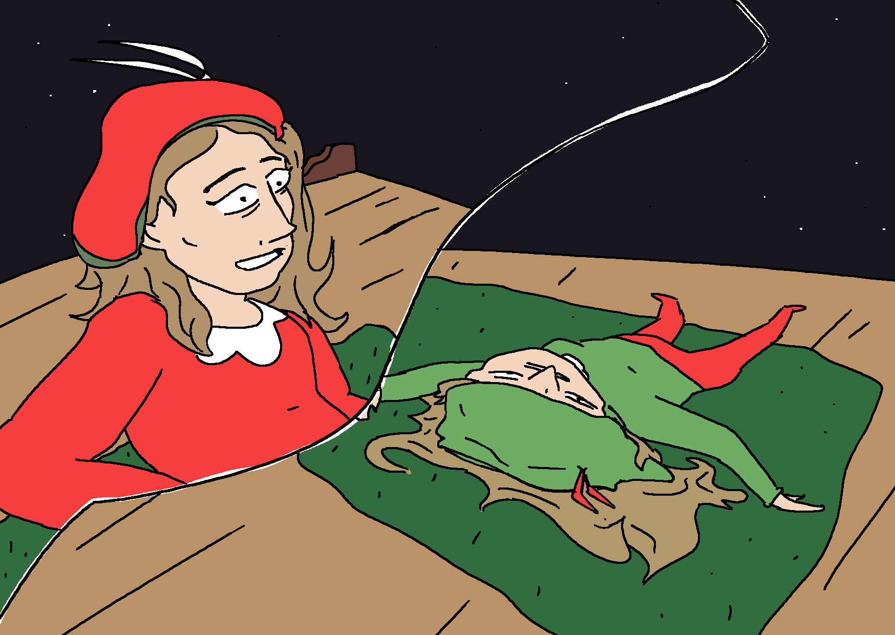
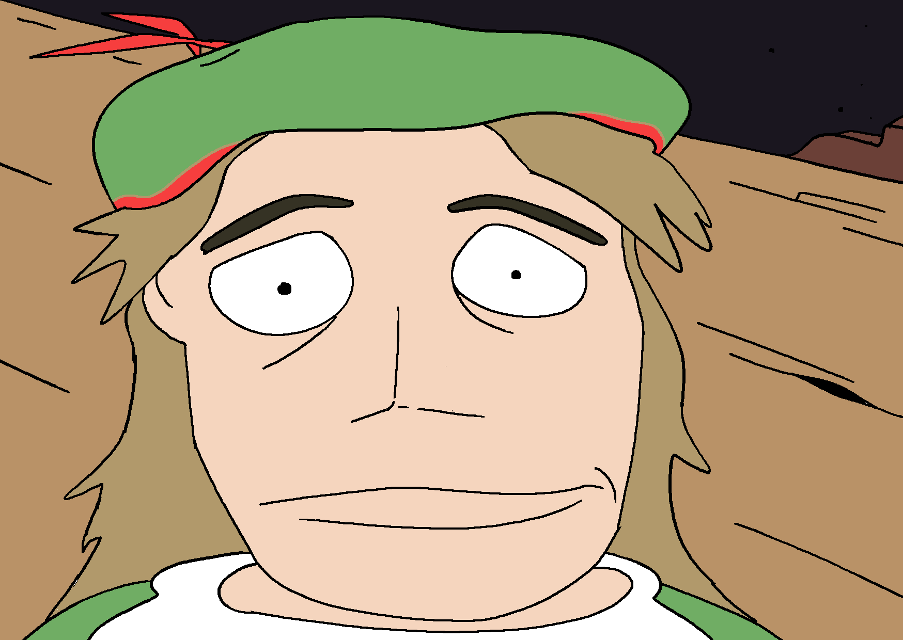
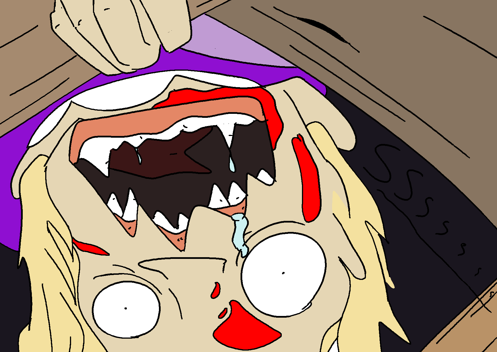

It's the 97th day PS (Post-Sint) and Iritepiet and Antiritepiet are in their usual hideout at the top of a decaying apartment complex. The place is decorated with carpets and cloth in the colors of their outfits.
Their room contains a multitude of things of its former inhabitant, such as a table and an office chair; some cushions and a stack of books. Iritepiet and Antiritepiet have also collected some stuff in their excursions for food, such as a hula hoop, empty sheets of paper and a fake hand made of plastic.
What will they do?
IRPI: Do you still believe in Sinterklaas?
IRPI: I'm having doubts myself.
IRPI: We haven't seen anything of him for so long.
IRPI: And the prophesy is also keeping us waiting.
IRPI: “A new sint will arise when the worthy is ready to take the role”.
IRPI: At this point I barely believe there even is someone who is worthy.
IRPI: The others around us can't take it anymore; I'm even having trouble recognising them for who they are.
IRPI: Begrafenisondernemerpiet* was looking even more grim when we saw him, don't you think?
* "Begrafenisondernemer" is the dutch word for "undertaker".
IRPI: Even Huppeltjespiet used to be funny and cheerful.
IRPI: Now she appears more cunning and businesslike to me.
IRPI: The pressure is too much.
IRPI: How long until it will also get to us?

AIPI: don't we have eachother?

AIPI: until its time we'll just make it as nice as possible.
AIPI: what are we supposed to do otherwise?
AIPI: just lie down here until some freak gets hungry enough to start eating us alive?
AIPI: Mm, I'm already doing that sort of ain't I...
AIPI: just you wait or i'll start eating you!
AIPI: then I'll start with your leg... and a bite from your arm...!!
IRPI: What do you m- OUCH DON'T! You're right, you're right!!
IRPI: I just...

IRPI: I just think it's difficult...
AIPI: it ís difficult.

KBPI: